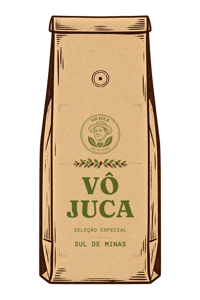
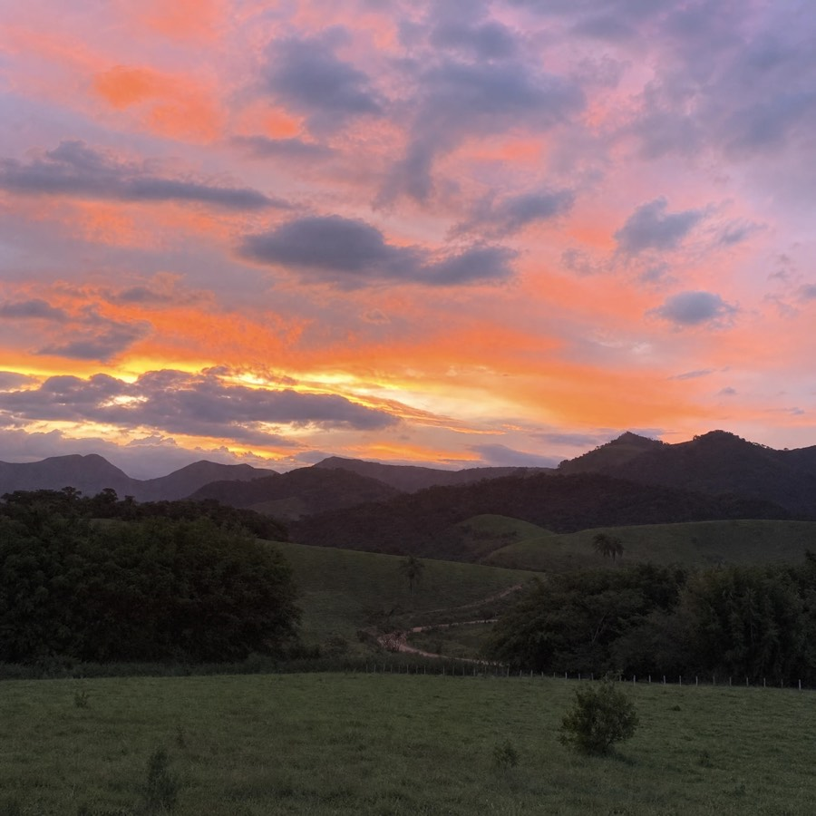
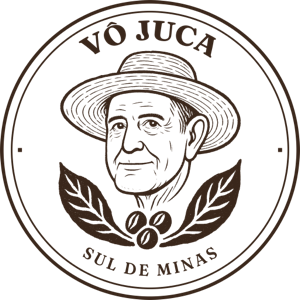
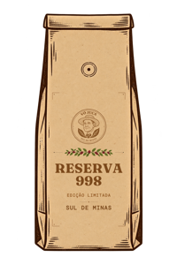
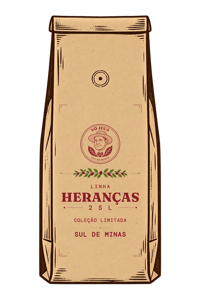
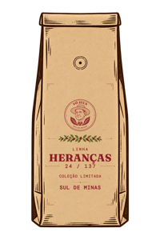
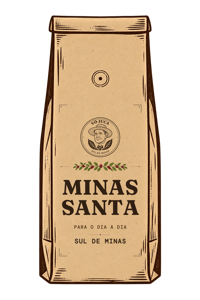

Seleção especial
Café Vô Juca
Frutado · Doce · Floral
Perfil suave e fácil de gostar, para quem presta atenção na xícara.
300 g em grãoR$ 43,08
300 g moídoR$ 45,48

Cafés especiais artesanais · Sul de Minas

Catálogo · outubro de 2026
O café vem do Sítio JR, em Santa Rita do Sapucaí (MG), a 998 metros. A lavoura foi replantada pelo meu tio Nando, neto do Juca, e hoje é cuidada pelo meu primo Fernandinho.
Colhemos à mão, secamos no terreiro e torramos em lotes pequenos. É café de família, do pé à embalagem.
João Henrique, o Juca de hoje

Seleção especial
Frutado · Doce · Floral
Perfil suave e fácil de gostar, para quem presta atenção na xícara.
300 g em grãoR$ 43,08
300 g moídoR$ 45,48

Edição limitada
Caramelo · Chocolate · Malte · Rapadura
O nome é a altitude da lavoura. Um café de sobremesa que funciona de manhã.
300 g em grãoR$ 48,00
300 g moídoR$ 50,28

Coleção limitada · microlote
Mel · Floral · Capim-limão
Catucaí 2SL colhido à mão. Corpo licoroso e final longo e doce.
300 g em grãoR$ 49,80
300 g moídoR$ 52,20

Coleção limitada · microlote
Floral · Frutas amarelas · Pêssego em calda
Catucaí 24-137 colhido à mão. Encorpado, com final longo e doce.
300 g em grãoR$ 49,80
300 g moídoR$ 52,20

Para o dia a dia
Encorpado · Sabor marcante · Tradicional
O café da rotina da casa, para o coador, a cafeteira e a italiana.
500 g moído finoR$ 55,00
Pagamento em Pix, cartão de crédito ou Bitcoin.
Assinatura mensal e fornecimento para empresas, com preço por quilo: é só pedir.
Estoque e preços podem mudar. Confirme pelo WhatsApp antes de pagar.